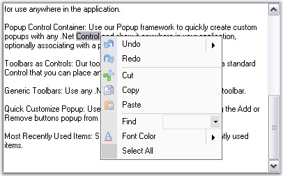

A PopupMenu represents a context menu for XPMenus, that can be shown over any control, when the user right clicks, anywhere in an application. It must be associated with a ParentBarItem whose contents will be displayed in the popup menu. Similar to the .NET Context menus, a popup menu can be displayed. PopupMenusManager class should be added to the designer to display the PopUp menu.

Figure 810: Popup Menu display on a TextBox Control
See Also
 Adding and Filling a PopupMenu
Adding and Filling a PopupMenu
Associating Popup Menu to a Control